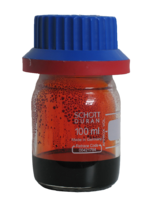

Bromine
|  | |||||||||||||||||||||||||||||||||||||||||||||||||||||||||||||||||||||||||||||||||||||||||||||||||||||||||||||||||||||||||||||||||||||||||||||||||||||||||||||||||||||||||||||||||||||||||||||||||||||||||||||||||||||||||||||||||||||
| General properties | |||||||||||||||||||||||||||||||||||||||||||||||||||||||||||||||||||||||||||||||||||||||||||||||||||||||||||||||||||||||||||||||||||||||||||||||||||||||||||||||||||||||||||||||||||||||||||||||||||||||||||||||||||||||||||||||||||||
|---|---|---|---|---|---|---|---|---|---|---|---|---|---|---|---|---|---|---|---|---|---|---|---|---|---|---|---|---|---|---|---|---|---|---|---|---|---|---|---|---|---|---|---|---|---|---|---|---|---|---|---|---|---|---|---|---|---|---|---|---|---|---|---|---|---|---|---|---|---|---|---|---|---|---|---|---|---|---|---|---|---|---|---|---|---|---|---|---|---|---|---|---|---|---|---|---|---|---|---|---|---|---|---|---|---|---|---|---|---|---|---|---|---|---|---|---|---|---|---|---|---|---|---|---|---|---|---|---|---|---|---|---|---|---|---|---|---|---|---|---|---|---|---|---|---|---|---|---|---|---|---|---|---|---|---|---|---|---|---|---|---|---|---|---|---|---|---|---|---|---|---|---|---|---|---|---|---|---|---|---|---|---|---|---|---|---|---|---|---|---|---|---|---|---|---|---|---|---|---|---|---|---|---|---|---|---|---|---|---|---|---|---|---|---|---|---|---|---|---|---|---|---|---|---|---|---|---|---|---|
| Name, symbol | bromine, Br | ||||||||||||||||||||||||||||||||||||||||||||||||||||||||||||||||||||||||||||||||||||||||||||||||||||||||||||||||||||||||||||||||||||||||||||||||||||||||||||||||||||||||||||||||||||||||||||||||||||||||||||||||||||||||||||||||||||
| Pronunciation | /ˈbroʊmiːn/ or /ˈbroʊmɨn/ BROH-meen or BROH-min |
||||||||||||||||||||||||||||||||||||||||||||||||||||||||||||||||||||||||||||||||||||||||||||||||||||||||||||||||||||||||||||||||||||||||||||||||||||||||||||||||||||||||||||||||||||||||||||||||||||||||||||||||||||||||||||||||||||
| Appearance | gas/liquid: red-brown solid: metallic luster |
||||||||||||||||||||||||||||||||||||||||||||||||||||||||||||||||||||||||||||||||||||||||||||||||||||||||||||||||||||||||||||||||||||||||||||||||||||||||||||||||||||||||||||||||||||||||||||||||||||||||||||||||||||||||||||||||||||
| Bromine in the periodic table | |||||||||||||||||||||||||||||||||||||||||||||||||||||||||||||||||||||||||||||||||||||||||||||||||||||||||||||||||||||||||||||||||||||||||||||||||||||||||||||||||||||||||||||||||||||||||||||||||||||||||||||||||||||||||||||||||||||
|
|||||||||||||||||||||||||||||||||||||||||||||||||||||||||||||||||||||||||||||||||||||||||||||||||||||||||||||||||||||||||||||||||||||||||||||||||||||||||||||||||||||||||||||||||||||||||||||||||||||||||||||||||||||||||||||||||||||
| Atomic number | 35 | ||||||||||||||||||||||||||||||||||||||||||||||||||||||||||||||||||||||||||||||||||||||||||||||||||||||||||||||||||||||||||||||||||||||||||||||||||||||||||||||||||||||||||||||||||||||||||||||||||||||||||||||||||||||||||||||||||||
| Standard atomic weight | 79.904[1] (79.901–79.907)[2] | ||||||||||||||||||||||||||||||||||||||||||||||||||||||||||||||||||||||||||||||||||||||||||||||||||||||||||||||||||||||||||||||||||||||||||||||||||||||||||||||||||||||||||||||||||||||||||||||||||||||||||||||||||||||||||||||||||||
| Element category | diatomic nonmetal | ||||||||||||||||||||||||||||||||||||||||||||||||||||||||||||||||||||||||||||||||||||||||||||||||||||||||||||||||||||||||||||||||||||||||||||||||||||||||||||||||||||||||||||||||||||||||||||||||||||||||||||||||||||||||||||||||||||
| Group, block | group 17 (halogens), p-block | ||||||||||||||||||||||||||||||||||||||||||||||||||||||||||||||||||||||||||||||||||||||||||||||||||||||||||||||||||||||||||||||||||||||||||||||||||||||||||||||||||||||||||||||||||||||||||||||||||||||||||||||||||||||||||||||||||||
| Period | period 4 | ||||||||||||||||||||||||||||||||||||||||||||||||||||||||||||||||||||||||||||||||||||||||||||||||||||||||||||||||||||||||||||||||||||||||||||||||||||||||||||||||||||||||||||||||||||||||||||||||||||||||||||||||||||||||||||||||||||
| Electron configuration | [Ar] 3d10 4s2 4p5 | ||||||||||||||||||||||||||||||||||||||||||||||||||||||||||||||||||||||||||||||||||||||||||||||||||||||||||||||||||||||||||||||||||||||||||||||||||||||||||||||||||||||||||||||||||||||||||||||||||||||||||||||||||||||||||||||||||||
| per shell | 2, 8, 18, 7 | ||||||||||||||||||||||||||||||||||||||||||||||||||||||||||||||||||||||||||||||||||||||||||||||||||||||||||||||||||||||||||||||||||||||||||||||||||||||||||||||||||||||||||||||||||||||||||||||||||||||||||||||||||||||||||||||||||||
| Physical properties | |||||||||||||||||||||||||||||||||||||||||||||||||||||||||||||||||||||||||||||||||||||||||||||||||||||||||||||||||||||||||||||||||||||||||||||||||||||||||||||||||||||||||||||||||||||||||||||||||||||||||||||||||||||||||||||||||||||
| Phase | liquid | ||||||||||||||||||||||||||||||||||||||||||||||||||||||||||||||||||||||||||||||||||||||||||||||||||||||||||||||||||||||||||||||||||||||||||||||||||||||||||||||||||||||||||||||||||||||||||||||||||||||||||||||||||||||||||||||||||||
| Melting point | 265.8 K (−7.2 °C, 19 °F) | ||||||||||||||||||||||||||||||||||||||||||||||||||||||||||||||||||||||||||||||||||||||||||||||||||||||||||||||||||||||||||||||||||||||||||||||||||||||||||||||||||||||||||||||||||||||||||||||||||||||||||||||||||||||||||||||||||||
| Boiling point | 332.0 K (58.8 °C, 137.8 °F) | ||||||||||||||||||||||||||||||||||||||||||||||||||||||||||||||||||||||||||||||||||||||||||||||||||||||||||||||||||||||||||||||||||||||||||||||||||||||||||||||||||||||||||||||||||||||||||||||||||||||||||||||||||||||||||||||||||||
| Density near r.t. | Br2, liquid: 3.1028 g·cm−3 | ||||||||||||||||||||||||||||||||||||||||||||||||||||||||||||||||||||||||||||||||||||||||||||||||||||||||||||||||||||||||||||||||||||||||||||||||||||||||||||||||||||||||||||||||||||||||||||||||||||||||||||||||||||||||||||||||||||
| Triple point | 265.90 K, 5.8 kPa[3] | ||||||||||||||||||||||||||||||||||||||||||||||||||||||||||||||||||||||||||||||||||||||||||||||||||||||||||||||||||||||||||||||||||||||||||||||||||||||||||||||||||||||||||||||||||||||||||||||||||||||||||||||||||||||||||||||||||||
| Critical point | 588 K, 10.34 MPa[3] | ||||||||||||||||||||||||||||||||||||||||||||||||||||||||||||||||||||||||||||||||||||||||||||||||||||||||||||||||||||||||||||||||||||||||||||||||||||||||||||||||||||||||||||||||||||||||||||||||||||||||||||||||||||||||||||||||||||
| Heat of fusion | (Br2) 10.571 kJ·mol−1 | ||||||||||||||||||||||||||||||||||||||||||||||||||||||||||||||||||||||||||||||||||||||||||||||||||||||||||||||||||||||||||||||||||||||||||||||||||||||||||||||||||||||||||||||||||||||||||||||||||||||||||||||||||||||||||||||||||||
| Heat of vaporization | (Br2) 29.96 kJ·mol−1 | ||||||||||||||||||||||||||||||||||||||||||||||||||||||||||||||||||||||||||||||||||||||||||||||||||||||||||||||||||||||||||||||||||||||||||||||||||||||||||||||||||||||||||||||||||||||||||||||||||||||||||||||||||||||||||||||||||||
| Molar heat capacity | (Br2) 75.69 J·mol−1·K−1 | ||||||||||||||||||||||||||||||||||||||||||||||||||||||||||||||||||||||||||||||||||||||||||||||||||||||||||||||||||||||||||||||||||||||||||||||||||||||||||||||||||||||||||||||||||||||||||||||||||||||||||||||||||||||||||||||||||||
vapor pressure
|
|||||||||||||||||||||||||||||||||||||||||||||||||||||||||||||||||||||||||||||||||||||||||||||||||||||||||||||||||||||||||||||||||||||||||||||||||||||||||||||||||||||||||||||||||||||||||||||||||||||||||||||||||||||||||||||||||||||
| Atomic properties | |||||||||||||||||||||||||||||||||||||||||||||||||||||||||||||||||||||||||||||||||||||||||||||||||||||||||||||||||||||||||||||||||||||||||||||||||||||||||||||||||||||||||||||||||||||||||||||||||||||||||||||||||||||||||||||||||||||
| Oxidation states | 7, 5, 4, 3, 1, −1 (a strongly acidic oxide) | ||||||||||||||||||||||||||||||||||||||||||||||||||||||||||||||||||||||||||||||||||||||||||||||||||||||||||||||||||||||||||||||||||||||||||||||||||||||||||||||||||||||||||||||||||||||||||||||||||||||||||||||||||||||||||||||||||||
| Electronegativity | Pauling scale: 2.96 | ||||||||||||||||||||||||||||||||||||||||||||||||||||||||||||||||||||||||||||||||||||||||||||||||||||||||||||||||||||||||||||||||||||||||||||||||||||||||||||||||||||||||||||||||||||||||||||||||||||||||||||||||||||||||||||||||||||
| Ionization energies | 1st: 1139.9 kJ·mol−1 2nd: 2103 kJ·mol−1 3rd: 3470 kJ·mol−1 |
||||||||||||||||||||||||||||||||||||||||||||||||||||||||||||||||||||||||||||||||||||||||||||||||||||||||||||||||||||||||||||||||||||||||||||||||||||||||||||||||||||||||||||||||||||||||||||||||||||||||||||||||||||||||||||||||||||
| Atomic radius | empirical: 120 pm | ||||||||||||||||||||||||||||||||||||||||||||||||||||||||||||||||||||||||||||||||||||||||||||||||||||||||||||||||||||||||||||||||||||||||||||||||||||||||||||||||||||||||||||||||||||||||||||||||||||||||||||||||||||||||||||||||||||
| Covalent radius | 120±3 pm | ||||||||||||||||||||||||||||||||||||||||||||||||||||||||||||||||||||||||||||||||||||||||||||||||||||||||||||||||||||||||||||||||||||||||||||||||||||||||||||||||||||||||||||||||||||||||||||||||||||||||||||||||||||||||||||||||||||
| Van der Waals radius | 185 pm | ||||||||||||||||||||||||||||||||||||||||||||||||||||||||||||||||||||||||||||||||||||||||||||||||||||||||||||||||||||||||||||||||||||||||||||||||||||||||||||||||||||||||||||||||||||||||||||||||||||||||||||||||||||||||||||||||||||
| Miscellanea | |||||||||||||||||||||||||||||||||||||||||||||||||||||||||||||||||||||||||||||||||||||||||||||||||||||||||||||||||||||||||||||||||||||||||||||||||||||||||||||||||||||||||||||||||||||||||||||||||||||||||||||||||||||||||||||||||||||
| Crystal structure | orthorhombic | ||||||||||||||||||||||||||||||||||||||||||||||||||||||||||||||||||||||||||||||||||||||||||||||||||||||||||||||||||||||||||||||||||||||||||||||||||||||||||||||||||||||||||||||||||||||||||||||||||||||||||||||||||||||||||||||||||||
| Speed of sound | 206 m·s−1 (at 20 °C) | ||||||||||||||||||||||||||||||||||||||||||||||||||||||||||||||||||||||||||||||||||||||||||||||||||||||||||||||||||||||||||||||||||||||||||||||||||||||||||||||||||||||||||||||||||||||||||||||||||||||||||||||||||||||||||||||||||||
| Thermal conductivity | 0.122 W·m−1·K−1 | ||||||||||||||||||||||||||||||||||||||||||||||||||||||||||||||||||||||||||||||||||||||||||||||||||||||||||||||||||||||||||||||||||||||||||||||||||||||||||||||||||||||||||||||||||||||||||||||||||||||||||||||||||||||||||||||||||||
| Electrical resistivity | 7.8×1010 Ω·m (at 20 °C) | ||||||||||||||||||||||||||||||||||||||||||||||||||||||||||||||||||||||||||||||||||||||||||||||||||||||||||||||||||||||||||||||||||||||||||||||||||||||||||||||||||||||||||||||||||||||||||||||||||||||||||||||||||||||||||||||||||||
| Magnetic ordering | diamagnetic[4] | ||||||||||||||||||||||||||||||||||||||||||||||||||||||||||||||||||||||||||||||||||||||||||||||||||||||||||||||||||||||||||||||||||||||||||||||||||||||||||||||||||||||||||||||||||||||||||||||||||||||||||||||||||||||||||||||||||||
| CAS Registry Number | 7726-95-6 | ||||||||||||||||||||||||||||||||||||||||||||||||||||||||||||||||||||||||||||||||||||||||||||||||||||||||||||||||||||||||||||||||||||||||||||||||||||||||||||||||||||||||||||||||||||||||||||||||||||||||||||||||||||||||||||||||||||
| History | |||||||||||||||||||||||||||||||||||||||||||||||||||||||||||||||||||||||||||||||||||||||||||||||||||||||||||||||||||||||||||||||||||||||||||||||||||||||||||||||||||||||||||||||||||||||||||||||||||||||||||||||||||||||||||||||||||||
| Discovery and first isolation | Antoine Jérôme Balard and Leopold Gmelin (1825) | ||||||||||||||||||||||||||||||||||||||||||||||||||||||||||||||||||||||||||||||||||||||||||||||||||||||||||||||||||||||||||||||||||||||||||||||||||||||||||||||||||||||||||||||||||||||||||||||||||||||||||||||||||||||||||||||||||||
| Most stable isotopes | |||||||||||||||||||||||||||||||||||||||||||||||||||||||||||||||||||||||||||||||||||||||||||||||||||||||||||||||||||||||||||||||||||||||||||||||||||||||||||||||||||||||||||||||||||||||||||||||||||||||||||||||||||||||||||||||||||||
|
|||||||||||||||||||||||||||||||||||||||||||||||||||||||||||||||||||||||||||||||||||||||||||||||||||||||||||||||||||||||||||||||||||||||||||||||||||||||||||||||||||||||||||||||||||||||||||||||||||||||||||||||||||||||||||||||||||||
Bromine (from Greek: βρῶμος, brómos, meaning "strong-smelling" or "stench")[5] is a chemical element with symbol Br, and atomic number 35. It is a halogen. The element was isolated independently by two chemists, Carl Jacob Löwig and Antoine Jerome Balard, in 1825–1826. Elemental bromine is a fuming red-brown liquid at room temperature, corrosive and toxic, with properties between those of chlorine and iodine. Free bromine does not occur in nature, but occurs as colorless soluble crystalline mineral halide salts, analogous to table salt.
Bromine is rarer than about three-quarters of elements in the Earth's crust. The high solubility of bromide ions has caused its accumulation in the oceans, and commercially the element is easily extracted from brine pools, mostly in the United States, Israel and China. About 556,000 tonnes were produced in 2007, an amount similar to the far more abundant element magnesium.[6]
At high temperatures, organobromine compounds readily convert to free bromine atoms, a process which has the effect of stopping free radical chemical chain reactions. This effect makes organobromine compounds useful as fire retardants; more than half the bromine produced industrially worldwide each year is put to this use. Unfortunately, the same property causes sunlight to convert volatile organobromine compounds to free bromine atoms in the atmosphere, and an unwanted side effect of this process is ozone depletion. As a result, many organobromide compounds that were formerly in common use—such as the pesticide, methyl bromide—have been abandoned. Bromine compounds are still used for purposes such as in well drilling fluids, in photographic film, and as an intermediate in the manufacture of organic chemicals.
Bromine has been long believed to have no essential function in mammals, but recent research suggests that bromine is necessary for tissue development. In addition, bromine is used preferentially over chlorine by one antiparasitic enzyme in the human immune system[citation needed]. Organobromides are needed and produced enzymatically from bromide by some lower life forms in the sea, particularly algae, and the ash of seaweed was one source of bromine's discovery. As a pharmaceutical, the simple bromide ion, Br−, has inhibitory effects on the central nervous system, and bromide salts were once a major medical sedative, before being replaced by shorter-acting drugs. They retain niche uses as antiepileptics.
Contents
[hide]Characteristics[edit]
Physical[edit]
The element bromine exists as a diatomic molecule, Br2. It is a dense, mobile, slightly transparent reddish-brown liquid, that evaporates easily at standard temperature and pressures to give an orange vapor (its color resembles nitrogen dioxide) that has a strongly disagreeable odor resembling that of chlorine. It is one of only two elements on the periodic table that are known to be liquids at room temperature (mercury is the other, although caesium, gallium, and rubidium melt just above room temperature).
At a pressure of 55 GPa (roughly 540,000 times atmospheric pressure) bromine converts to a metal. At 75 GPa it converts to a face centered orthorhombic structure. At 100 GPa it converts to a body centered orthorhombic monatomic form.[7]
Chemical[edit]
Being less reactive than chlorine but more reactive than iodine, bromine reacts vigorously with metals, especially in the presence of water, to give bromide salts. It is also reactive toward most organic compounds, especially upon illumination, conditions that favor the dissociation of the diatomic molecule into bromine radicals:
- Br2 2 Br·
It bonds easily with many elements and has a strong bleaching action.
Bromine is slightly soluble in water, but it is highly soluble in organic solvents such as carbon disulfide, carbon tetrachloride, aliphatic alcohols, and acetic acid.
Isotopes[edit]
Bromine has two stable isotopes, 79Br (50.69%) and 81Br (49.31%). At least 23 radioisotopes are known. Many of the bromine isotopes are fission products. Several of the heavier bromine isotopes from fission are delayed neutron emitters, important to the controllability of a nuclear reactor. All of the radioactive bromine isotopes are relatively short lived. The longest half-life is the neutron deficient 77Br at 2.376 days. The longest half-life on the neutron rich side is 82Br at 1.471 days. A number of the bromine isotopes exhibit metastable isomers. Stable 79Br exhibits a radioactive isomer, with a half-life of 4.86 seconds. It decays by isomeric transition to the stable ground state.[8]
The isotopes of bromine range from 67Br to 98Br. One of these, 67Br has an unknown half life. Six isotopes, 95Br to 98Br, 68Br, and 69Br have half-lives under a microsecond. The isotopes 91Br to 94Br and 70Br have half lives of a microsecond to a second. All but two of the remaining isotopes of bromine have half lives of 1 second to 10,000,000 seconds. The other two, 79Br and 81Br, are stable.[9]
The three lightest isotopes of bromine (67Br to 69Br) decay via proton emission. The isotopes 70Br through 78Br decay via electron capture or positron emission. 80Br and 82Br to 97Br decay via electron emission. 98Br decays via neutron emission.[10]
History[edit]
Bromine was discovered independently by two chemists, Carl Jacob Löwig[11] and Antoine Balard,[12][13] in 1825 and 1826, respectively.[14]
Balard found bromine chemicals in the ash of seaweed from the salt marshes of Montpellier. The seaweed was used to produce iodine, but also contained bromine. Balard distilled the bromine from a solution of seaweed ash saturated with chlorine. The properties of the resulting substance resembled that of an intermediate of chlorine and iodine; with those results he tried to prove that the substance was iodine monochloride (ICl), but after failing to do so he was sure that he had found a new element and named it muride, derived from the Latin word muria for brine.[13]
Löwig isolated bromine from a mineral water spring from his hometown Bad Kreuznach in 1825. Löwig used a solution of the mineral salt saturated with chlorine and extracted the bromine with diethyl ether. After evaporation of the ether a brown liquid remained. With this liquid as a sample for his work he applied for a position in the laboratory of Leopold Gmelin in Heidelberg. The publication of the results was delayed and Balard published his results first.[15]
After the French chemists Louis Nicolas Vauquelin, Louis Jacques Thénard, and Joseph-Louis Gay-Lussac approved the experiments of the young pharmacist Balard, the results were presented at a lecture of the Académie des Sciences and published in Annales de Chimie et Physique.[12] In his publication Balard states that he changed the name from muride to brôme on the proposal of M. Anglada. (Brôme (bromine) derives from the Greek βρωμος (stench).[12][16]) Other sources claim that the French chemist and physicist Joseph-Louis Gay-Lussac suggested the name brôme for the characteristic smell of the vapors.[17][18] Bromine was not produced in large quantities until 1860.
The first commercial use, besides some minor medical applications, was the use of bromine for the daguerreotype. In 1840 it was discovered that bromine had some advantages over the previously used iodine vapor to create the light sensitive silver halide layer used for daguerreotypy.[19]
Potassium bromide and sodium bromide were used as anticonvulsants and sedatives in the late 19th and early 20th centuries, until they were gradually superseded by chloral hydrate and then the barbiturates.[20] In the early years of the First World War, bromine compounds such as xylyl bromide were used as poison gas.[21]
Occurrence[edit]
The diatomic element Br2 does not occur naturally. Instead, bromine exists exclusively as bromide salts in diffuse amounts in crustal rock. Owing to leaching, bromide salts have accumulated in sea water at 65 parts per million (ppm),[22] which is less than chloride. Bromine may be economically recovered from bromide-rich brine wells and from the Dead Sea waters (up to 50,000 ppm).[23][24] It exists in the Earth's crust at an average concentration of 0.4 ppm, making it the 62nd most abundant element. The bromine concentration in soils varies normally between 5 and 40 ppm, but some volcanic soils can contain up to 500 ppm. The concentration of bromine in the atmosphere is extremely low, at only a few ppt.[25] A large number of organobromine compounds are found in small amounts in nature.
China's bromine reserves are located in the Shandong Province and Israel's bromine reserves are contained in the waters of the Dead Sea.[26] The largest bromine reserve in the United States is located in Columbia County and Union County, Arkansas, U.S.[27]
Production[edit]
Bromine production has increased sixfold since the 1960s. Approximately 556,000 tonnes (worth around US $2.5 billion) were produced in 2007 worldwide, with the predominant contribution from the United States (226,000 t) and Israel (210,000 t).[6][25][28] US production was excluded from the United States Geological Survey after 2007, and from the 380,000 tonnes mined by other countries in 2010, 140,000 t were produced by China, 130,000 t by Israel and 80,000 t by Jordan.[29]
Bromide-rich brines are treated with chlorine gas, flushing through with air. In this treatment, bromide anions are oxidized to bromine by the chlorine gas.
- 2 Br− + Cl2 → 2 Cl− + Br2
Laboratory methods of production[edit]
In the laboratory, because of its commercial availability and long shelf-life, bromine is not typically prepared. Small amounts of bromine can however be generated through the reaction of solid sodium bromide with concentrated sulfuric acid (H2SO4). The first stage is formation of hydrogen bromide (HBr), which is a gas, but under the reaction conditions some of the HBr is oxidized further by the sulfuric acid to form bromine (Br2) and sulfur dioxide (SO2).
- NaBr (s) + H2SO4 (aq) → HBr (aq) + NaHSO4 (aq)
- 2 HBr (aq) + H2SO4 (aq) → Br2 (g) + SO2 (g) + 2 H2O (l)
Non oxidizing acid alternatives, such as the use of dilute hydrobromic acid with sodium hypobromite, are also available, as the hypobromous acid formed from them is unstable in the presence of bromide, being reduced by it according to the reaction:
- 2 OBr− (aq) + 4 HBr (aq) → 2Br2 + 2H2O + 2Br−
The reactions are the reverse of disproportionation reactions of elemental bromine in base, and are called comproportionation. A similar reaction happens with sodium hypochlorite, acid, and chloride, leading to elemental chlorine.
Reactions involving an oxidizing agent, such as potassium permanganate or manganese dioxide, on bromide ions in the presence of an acid, also give bromine in the reactions analogous to the formation of elemental chlorine and iodine from an acid and oxidant.
Like iodine, bromine is soluble in chloroform but only slightly soluble in water. In water, the solubility can be increased by the presence of bromide ions. Concentrated solutions of bromine are rarely prepared in the lab because of hazards. As is the case with chlorine solutions or iodine solutions, sodium thiosulphate (or any soluble thiosulphate) is an effective reagent for reducing bromine to colorless odorless bromide, thus dealing with stains and odor from the element in unwanted places. For the same reason, thiosulfate ("fixer's hypo") is used in photography to deal with free bromine in silver bromide film emulsions.
Compounds and chemistry[edit]
|
|
This section needs additional citations for verification. (September 2010) |
Organic chemistry[edit]

As with other halogens, bromine substitutes for hydrogen in hydrocarbons, bonding covalently to carbon. As with other halogens, the C-Br product of this substitution is generally colorless if the corresponding C-H compound is colorless. Addition of covalently bonded bromine tends to increase the density and raise the melting point of organic compounds.
Organic compounds are brominated by either addition or substitution reactions. Bromine undergoes electrophilic addition to the double-bonds of alkenes, via a cyclic bromonium intermediate. In non-aqueous solvents such as carbon disulfide, this yields the di-bromo product. For example, reaction with ethylene will produce 1,2-dibromoethane. Bromine also undergoes electrophilic substitution to phenols and anilines. When used as bromine water, a small amount of the corresponding bromohydrin is formed as well as the dibromo compound. So reliable is the reactivity of bromine that bromine water is employed as a reagent to test for the presence of alkenes, phenols, and anilines. Like the other halogens, bromine participates in free radical reactions. For example, hydrocarbons are brominated upon treatment with bromine in the presence of light.
Bromine, sometimes with a catalytic amount of phosphorus, easily brominates carboxylic acids at the α-position. This method, the Hell-Volhard-Zelinsky reaction, is the basis of the commercial route to bromoacetic acid. N-Bromosuccinimide is commonly used as a substitute for elemental bromine, being easier to handle, and reacting more mildly and thus more selectively. Organic bromides are often preferable relative to the less reactive chlorides and more expensive iodide-containing reagents. Thus, Grignard and organolithium compound are most often generated from the corresponding bromides.
Certain bromine-related compounds have been evaluated to have an ozone depletion potential or bioaccumulate in living organisms. As a result, many industrial bromine compounds are no longer manufactured, are being restricted, or scheduled for phasing out. The Montreal Protocol mentions several organobromine compounds for this phase out.
Inorganic chemistry[edit]
Inorganic bromine compounds adopt a variety of oxidation states from −1 to +7.[30] In nature, bromide (Br−) is by far the most common state, and departures from this -1 oxidation state are entirely due to living organisms and bromide's interaction with biologically produced oxidants, such as free oxygen.
Like other halogens, bromide ion is colorless, and forms a number of transparent ionic mineral salts, analogous to chloride. Bromide ion is highly soluble in water.
Examples of compounds for bromine's various oxidation states are shown below:
| Oxidation states of bromine |
|
|---|---|
| −1 | HBr |
| 0 | Br 2 |
| +1 | BrCl |
| +3 | BrF 3 |
| +5 | BrF 5 |
| +5 | BrO− 3 |
| +7 | BrO− 4 |
Bromine is an oxidizer, and it will oxidize iodide ions to iodine, being itself reduced to bromide:
- Br2 + 2 I− → 2 Br− + I2
Bromine will also oxidize metals and metalloids to the corresponding bromides. Anhydrous bromine is less reactive toward many metals than hydrated bromine, however. Dry bromine reacts vigorously with aluminium, titanium, mercury as well as alkaline earths and alkali metals.
Dissolving bromine in alkaline solution gives a mixture of bromide and hypobromite:
- Br2 + 2 OH− → Br− + OBr− + H2O
This hypobromite is responsible for the bleaching abilities of bromide solutions. Warming of these solutions causes the disproportion reaction of the hypobromite to give bromate, a strong oxidising agent very similar to chlorate.
- 3 BrO−
→ BrO−
3 + 2 Br−
In contrast to the route to perchlorates, perbromates are not accessible through electrolysis but only by reacting bromate solutions with fluorine or ozone.
- BrO3− + H2O + F2 → BrO−
4 + 2 HF - BrO3− + O3 → BrO−
4 + O2
Bromine reacts violently and explosively with aluminium metal, forming aluminium bromide:
- 2 Al + 3 Br2 → 2 AlBr3
Bromine reacts with hydrogen in gaseous form and gives hydrogen bromide:
Bromine reacts with alkali metal iodides in a displacement reaction. This reaction forms alkali metal bromides and produces elemental iodine:
Applications[edit]
A wide variety of organobromine compounds are used in industry. Some are prepared from bromine and others are prepared from hydrogen bromide, which is obtained by burning hydrogen in bromine.[31]
Illustrative of the addition reaction[32] is the preparation of 1,2-dibromoethane, the organobromine compound produced in the largest amounts:
- C2H4 + Br2 → CH2BrCH2Br
Flame retardant[edit]
Brominated flame retardants represent a commodity of growing importance, and represent the largest commercial use of bromine. When the brominated material burns, the flame retardant produces hydrobromic acid which interferes in the radical chain reaction of the oxidation reaction of the fire. The mechanism is that the highly reactive hydrogen radicals, oxygen radicals, and hydroxy radicals react with hydrobromic acid to form less reactive bromine radicals (i.e., free bromine atoms). Bromine atoms may also react directly with other radicals to help terminate the free radical chain-reactions that characterize combustion.[33][34]
To make brominated polymers and plastics, bromine-containing compounds can be incorporated into the polymer during polymerization. One method is to include a relatively small amount of brominated monomer during the polymerization process. For example, vinyl bromide can be used in the production of polyethylene, polyvinylchloride or polypropylene. Specific highly brominated molecules can also be added that participate in the polymerization process For example, tetrabromobisphenol A can be added to polyesters or epoxy resins, where it becomes part of the polymer. Epoxys used in printed circuit boards are normally made from such flame retardant resins, indicated by the FR in the abbreviation of the products (FR-4 and FR-2). In some cases the bromine containing compound may be added after polymerization. For example, decabromodiphenyl ether can be added to the final polymers.[35]
A number of gaseous or highly volatile brominated halomethane compounds are non-toxic and make superior fire suppressant agents by this same mechanism, and are particular effective in enclosed spaces such as submarines, airplanes, and spacecraft. However, they are expensive and their production and use has been greatly curtailed due to their effect as ozone-depleting agents. They are no longer used in routine fire extinguishers, but retain niche uses in aerospace and military automatic fire-suppression applications. They include bromochloromethane (Halon 1011, CH2BrCl), bromochlorodifluoromethane (Halon 1211, CBrClF2), and bromotrifluoromethane (Halon 1301, CBrF3).
Gasoline additive[edit]
Ethylene bromide was an additive in gasolines containing lead anti-engine knocking agents. It scavenges lead by forming volatile lead bromide, which is exhausted from the engine. This application accounted for 77% of the bromine use in 1966 in the US. This application has declined since the 1970s due to environmental regulations (see below).[36]
Pesticide[edit]
Poisonous methyl bromide was widely used as pesticide to fumigate soil and to fumigate housing, by the tenting method. Ethylene bromide was similarly used.[28] These volatile organobromine compounds are all now regulated as ozone depletion agents. The Montreal Protocol on Substances that Deplete the Ozone scheduled the phase out for the ozone depleting chemical by 2005, and organobromide pesticides are no longer used (in housing fumagation they have been replaced by such compounds as sulfuryl fluoride, which contain neither the chlorine or bromine organics which harm ozone). Prior to the Montreal protocol in 1991 (for example) an estimated 35,000 tonnes of the chemical were used to control nematodes, fungi, weeds and other soil-borne diseases.[37][38]
Medical and veterinary use[edit]
Bromide compounds, especially potassium bromide, were frequently used as general sedatives in the 19th and early 20th century. Bromides in the form of simple salts are still used as anticonvulsants in both veterinary and human medicine, although the latter use varies from country to country. For example, the U.S. Food and Drug Administration (FDA) does not approve bromide for the treatment of any disease, and it was removed from over-the-counter sedative products like Bromo-Seltzer, in 1975.[39] Thus, bromide levels are not routinely measured by medical laboratories in the U.S. However, U.S. veterinary medical diagnostic testing laboratories will measure blood bromide levels on request, as an aid to treatment of epilepsy in dogs.
Toxicity. Long-term use of potassium bromide (or any bromide salt) can lead to bromism. This state of central nervous system depression causes the moderate toxicity of bromide in multi-gram doses for humans and other mammals. The very long half-life of bromide ion in the body (~12 days) also contributes to toxicity from bromide build-up in body fluids. Bromide ingestion may also cause a skin eruption resembling acne.
Other uses[edit]
- The bromides of calcium, sodium, and zinc account for a sizable part of the bromine market. These salts form dense solutions in water that are used as drilling fluids sometimes called clear brine fluids.[28][40]
- Bromine is also used in the production of brominated vegetable oil, which is used as an emulsifier in many citrus-flavored soft drinks
(for example, Mountain Dew). After the introduction in the 1940s the
compound was extensively used until the UK and the US limited its use in
the mid 1970s and alternative emulsifiers were developed.[41]
Soft drinks containing brominated vegetable oil are still sold in the US (2013).[42]
- Several dyes, agrichemicals, and pharmaceuticals are organobromine compounds. 1-Bromo-3-chloropropane, 1-bromoethylbenzene, and 1-bromoalkanes are prepared by the antimarkovnikov addition of HBr to alkenes. Ethidium bromide, EtBr, is used as a DNA stain in gel electrophoresis.
- High refractive index compounds
- Bromine, like chlorine, is used in maintenance of swimming pools, especially spas (hot tubs), where it is generated in situ from a bromide plus hydrogen peroxide. In spas, the high water temperatures render chlorinated water purification and buffering compounds unstable, and bromine compounds may improve the life of the free-halogen antimicrobial.
- Water purification compounds, disinfectants and insecticides, such as tralomethrin (C22H19Br4NO3).[28]
- Potassium bromide is used in some photographic developers to inhibit the formation of fog (undesired reduction of silver).
- Scandium bromide is used in solid state synthesis of unusual clusters which are of interest for their structure and magnetic properties.
- Bromine vapor is used as the second step in sensitizing daguerreotype plates to be developed under mercury vapor. Bromine acts as an accelerator to the light sensitivity of the previously iodized plate.
- Bromine is also used to reduce mercury pollution from coal-fired power plants. This can be achieved either by treating activated carbon with bromine or by injecting bromine compounds onto the coal prior to combustion.
- Bromine can also be artificially substituted for the methyl substituent in the nitrogenous base thymine of DNA, creating the base analog 5-bromouracil. When this base is incorporated into DNA its different hydrogen bonding properties may cause mutation at the site of that base pair. The compound 5-bromouracil is thus an artificial mutagen.[43]
- Aqueous bromine can be used to test for the presence of alkenes. The aqueous bromine is shaken with the unknown substance and will decolorize if alkenes are present.[44]
Biological role[edit]

{kind=link}
{kind=link}
{kind=link}
{kind=link}
{kind=link}
{kind=link}
{kind=link}
{kind=link}
{kind=link}
{kind=link}
{kind=link}
{kind=link}
Recently, bromine (as bromide) was shown to be an essential cofactor for the peroxidasin catalyzed formation of sulfilimine crosslinks in collagen IV. Since this is a post-translational modification that occurs in all animals, bromine is therefore an essential trace element for humans.[45] Inorganic bromine and organobromine compounds also perform other biological functions, which may be essential, or at least optimal and preferred. For example, in the presence of H2O2 formed by the eosinophil, and either chloride or bromide ions, eosinophil peroxidase provides a potent mechanism by which eosinophils kill multicellular parasites (such as, for example, the nematode worms involved in filariasis); and also certain bacteria (such as tuberculosis bacteria). Eosinophil peroxidase is a haloperoxidase that preferentially uses bromide over chloride for this purpose, generating hypobromite (hypobromous acid).[46] A brominated ester (2-octyl γ-bromoacetoacetate) has been shown to be produced endogenously by mammalian (including human) tissue and has been shown to prolong REM sleep in cats.[47]
Marine organisms are the main source of organobromine compounds. Over 1600 compounds were identified by 1999. The most abundant one is methyl bromide (CH3Br) with an estimated 56,000 tonnes produced by marine algae each year.[48] The essential oil of the Hawaiian alga Asparagopsis taxiformis consists of 80% tribromomethane (bromoform).[49] Most of such organobromine compounds in the sea are made via the action of a unique algal enzyme, vanadium bromoperoxidase.[50] Though this enzyme is the most prolific creator of organic bromides by living organisms, other bromoperoxidases exist in nature that do not use vanadium.
A famous example of a bromine-containing organic compound that has been used by humans since ancient times is the fabric dye Tyrian purple.[25][48][51] The brominated indole indigo dye is produced by a medium-sized predatory sea snail, the marine gastropod Murex brandaris. The organobromine nature of the compound was not discovered until 1909 (see Paul Friedländer).[52]
Safety[edit]
Elemental bromine is toxic and causes burns. As an oxidizing agent, it is incompatible with most organic and inorganic compounds. Care needs to be taken when transporting bromine; it is commonly carried in steel tanks lined with lead, supported by strong metal frames.
When certain ionic compounds containing bromine are mixed with potassium permanganate (KMnO4) and an acidic substance, they will form a pale brown cloud of bromine gas.
- 6 Br− + 2 MnO−
4 + 8 H+ → 3 Br2 + 2 MnO2 + 4 H2O
This gas smells like bleach and is very irritating to the mucous membranes. Upon exposure, one should move to fresh air immediately. If symptoms of bromine poisoning arise, medical attention is needed.
See also[edit]
References[edit]
- Jump up ^ Conventional Atomic Weights 2013. Commission on Isotopic Abundances and Atomic Weights
- Jump up ^ Standard Atomic Weights 2013. Commission on Isotopic Abundances and Atomic Weights
- ^ Jump up to: a b Haynes, William M., ed. (2011). CRC Handbook of Chemistry and Physics (92nd ed.). Boca Raton, FL: CRC Press. p. 4.121. ISBN 1439855110.
- Jump up ^ Magnetic susceptibility of the elements and inorganic compounds, in Lide, D. R., ed. (2005). CRC Handbook of Chemistry and Physics (86th ed.). Boca Raton (FL): CRC Press. ISBN 0-8493-0486-5.
- Jump up ^ Turner, Edward (1828). Elements of chemistry: including the recent discoveries and doctrines of the science. p. 467.
The name first applied to it by its discoverer is muride; but it has since been changed to brome..from the Greek βρῶμος signifying a strong or rank odour. This appellation may in the English language be properly converted into that of Bromine.
- ^ Jump up to: a b Lyday, Phyllis A. "Commodity Report 2007: Bromine" (PDF). United States Geological Survey. Retrieved 2008-09-03.
- Jump up ^ Duan, Defang et al. (2007-09-26). "Ab initio studies of solid bromine under high pressure". Physical Review B 76 (10): 104113. Bibcode:2007PhRvB..76j4113D. doi:10.1103/PhysRevB.76.104113.
- Jump up ^ Audi, Georges; Bersillon, O.; Blachot, J.; Wapstra, A.H. (2003). "The NUBASE Evaluation of Nuclear and Decay Properties". Nuclear Physics A (Atomic Mass Data Center) 729: 3. Bibcode:2003NuPhA.729....3A. doi:10.1016/j.nuclphysa.2003.11.001.
- Jump up ^ Alejandro Sonzogni, NuDat 2.6, retrieved 2013-10-27
- Jump up ^ Alejandro Sonzogni, NuDat 2.6, retrieved 2013-10-27
- Jump up ^ Löwig, Carl Jacob (1829). "Das Brom und seine chemischen Verhältnisse" [Bromine and its chemical relationships] (in German). Heidelberg: Carl Winter.
- ^ Jump up to: a b c Balard, A. J. (1826). "Mémoire sur une substance particulière contenue dans l'eau de la mer" [Memoir on a peculiar substance contained in sea water]. Annales de Chimie et de Physique. 2nd series (in French) 32: 337–381.
- ^ Jump up to: a b Balard, Antoine (1826). "Memoir on a peculiar Substance contained in Sea Water". Annals of Philosophy 28: 381–387 and 411–426.
- Jump up ^ Weeks, Mary Elvira (1932). "The discovery of the elements: XVII. The halogen family". Journal of Chemical Education 9 (11): 1915. Bibcode:1932JChEd...9.1915W. doi:10.1021/ed009p1915.
- Jump up ^ Landolt, Hans Heinrich (1890). "Nekrolog: Carl Löwig". Berichte der deutschen chemischen Gesellschaft 23 (3): 905. doi:10.1002/cber.18900230395.
- Jump up ^ Vauquelin, L.N.; Thenard, L.J.; Gay-Lussac, J.L. (1826). "Rapport sur la Mémoire de M. Balard relatif à une nouvelle Substance" [Report on a memoir by Mr. Balard regarding a new substance]. Annales de Chimie et de Physique. 2nd series (in French) 32: 382–384.
- Jump up ^ On page 341 of his article, A. J. Balard (1826) "Mémoire sur une substance particulière contenue dans l'eau de la mer" [Memoir on a peculiar substance contained in sea water], Annales de Chimie et de Physique, 2nd series, vol. 32, pp. 337–381, Balard states that Mr. Anglada persuaded him to name his new element brôme. However, on page 382 of the same journal – "Rapport sur la Mémoire de M. Balard relatif à une nouvelle Substance" [Report on a memoir by Mr. Balard regarding a new substance], Annales de Chimie et de Physique, series 2, vol. 32, pp. 382–384. – a committee of the French Academy of Sciences claimed that they had renamed the new element brôme.
- Jump up ^ Wisniak, Jaime (2004). "Antoine-Jerôme Balard. The discoverer of bromine" (PDF). Revista CENIC Ciencias Químicas 35.
- Jump up ^ Barger, M. Susan; White, William Blaine (2000). "Technological Practice of Daguerreotypy". The Daguerreotype: Nineteenth-century Technology and Modern Science. JHU Press. pp. 31–35. ISBN 978-0-8018-6458-2.
- Jump up ^ Shorter, Edward (1997). "A History of Psychiatry: From the Era of the Asylum to the Age of Prozac". John Wiley and Sons. p. 200. ISBN 978-0-471-24531-5.
- Jump up ^ Sam Kean. The Disappearing Spoon
- Jump up ^ Tallmadge, John A; Butt, John B.; Solomon Herman J. (1964). "Minerals From Sea Salt". Ind. Eng. Chem. 56 (7): 44. doi:10.1021/ie50655a008.
- Jump up ^ Oumeish, Oumeish Youssef (1996). "Climatotherapy at the Dead Sea in Jordan". Clinics in Dermatology 14 (6): 659. doi:10.1016/S0738-081X(96)00101-0.
- Jump up ^ Al-Weshah, Radwan A (2008). "The water balance of the Dead Sea: an integrated approach". Hydrological Processes 14: 145. Bibcode:2000HyPr...14..145A. doi:10.1002/(SICI)1099-1085(200001)14:1<145::AID-HYP916>3.0.CO;2-N.
- ^ Jump up to: a b c Emsley, John (2001). "Bromine". Nature's Building Blocks: An A-Z Guide to the Elements. Oxford, England, UK: Oxford University Press. pp. 69–73. ISBN 0-19-850340-7.
- Jump up ^ Laurence Knight (27 September 2014). "Who's afraid of bromine?". BBC news. Retrieved 27 September 2014.
- Jump up ^ "Bromine:An Important Arkansas Industry" (PDF). Butler Center for Arkansas Studies.
- ^ Jump up to: a b c d Lyday, Phyllis A. "Mineral Yearbook 2007: Bromine" (PDF). United States Geological Survey. Retrieved 2008-09-03.
- Jump up ^ Bromine. USGS 2011 mineral commodities report
- Jump up ^ Greenwood, Norman N.; Earnshaw, Alan (1997). Chemistry of the Elements (2nd ed.). Butterworth-Heinemann. p. 806. ISBN 0080379419.
- Jump up ^ Mills, Jack F. (2002). Bromine: in Ullmann's Encyclopedia of Chemical Technology. Weinheim: Wiley-VCH Verlag. doi:10.1002/14356007.a04_391.
- Jump up ^ Khan NA; Deatherage FE; Brown JB (1963). "Stearolic Acid". Org. Synth.; Coll. Vol. 4, p. 851
- Jump up ^ Green, Joseph (1996). "Mechanisms for Flame Retardancy and Smoke suppression – A Review". Journal of Fire Sciences 14 (6): 426. doi:10.1177/073490419601400602.
- Jump up ^ Kaspersma, Jelle; Doumena, Cindy; Munrob Sheilaand; Prinsa, Anne-Marie (2002). "Fire retardant mechanism of aliphatic bromine compounds in polystyrene and polypropylene". Polymer Degradation and Stability 77 (2): 325. doi:10.1016/S0141-3910(02)00067-8.
- Jump up ^ Weil, Edward D.; Levchik, Sergei (2004). "A Review of Current Flame Retardant Systems for Epoxy Resins". Journal of Fire Sciences 22: 25. doi:10.1177/0734904104038107.
- Jump up ^ Alaeea, Mehran; Ariasb, Pedro; Sjödinc, Andreas; Bergman, Åke (2003). "An overview of commercially used brominated flame retardants, their applications, their use patterns in different countries/regions and possible modes of release". Environment International 29 (6): 683–9. doi:10.1016/S0160-4120(03)00121-1. PMID 12850087.
- Jump up ^ Messenger, Belinda; Braun, Adolf (2000). "Alternatives to Methyl Bromide for the Control of Soil-Borne Diseases and Pests in California" (PDF). Pest Management Analysis and Planning Program. Retrieved 2008-11-17.
- Jump up ^ Decanio, Stephen J.; Norman, Catherine S. (2008). "Economics of the "Critical Use" of Methyl bromide under the Montreal Protocol". Contemporary Economic Policy 23 (3): 376. doi:10.1093/cep/byi028.
- Jump up ^ Samuel Hopkins Adams (1905). The Great American fraud. Press of the American Medical Association. Retrieved 2011-06-25.
- Jump up ^ Darley, H. C. H.; Gray, George Robert (1988). Composition and Properties of Drilling and Completion Fluids. Gulf Professional Publishing. pp. 61–62. ISBN 978-0-87201-147-2.
- Jump up ^ Kaufman, Vered R.; Garti, Nissim (1984). "Effect of cloudy agents on the stability and opacity of cloudy emulsions for soft drinks". International Journal of Food Science & Technology 19 (2): 255. doi:10.1111/j.1365-2621.1984.tb00348.x.
- Jump up ^ Goodman, Brenda (30 January 2013). "Brominated Vegetable Oil Q&A". Retrieved 2013-04-05.
- Jump up ^ Nester EW; Anderson DG & Roberts CE, Jr. (4 June 2009). Loose Leaf Version of Microbiology: A Human Perspective. McGraw-Hill. ISBN 978-0-07-736647-6. Retrieved 2011-06-25.
- Jump up ^ http://www.bbc.co.uk/schools/gcsebitesize/science/edexcel/fuels/hydrocarbonsrev3.shtml
- Jump up ^ McCall AS; Cummings CF; Bhave G; Vanacore R; Page-McCaw A et al. (2014). "Bromine Is an Essential Trace Element for Assembly of Collagen IV Scaffolds in Tissue Development and Architecture". Cell 157 (6): 1380–92. doi:10.1016/j.cell.2014.05.009. PMID 24906154.
- Jump up ^ Mayeno AN; Curran AJ; Roberts RL; Foote CS (1989). "Eosinophils preferentially use bromide to generate halogenating agents". J. Biol. Chem. 264 (10): 5660–8. PMID 2538427.
- Jump up ^ Patricelli MP; Patterson JE; Boger DL; Cravatt BF (1998). "An endogenous sleep-inducing compound is a novel competitive inhibitor of fatty acid amide hydrolase". Bioorg. Med. Chem. Lett. 8 (6): 613–8. doi:10.1016/s0960-894x(98)00073-0. PMID 9871570.
- ^ Jump up to: a b Gribble, Gordon W. (1999). "The diversity of naturally occurring organobromine compounds". Chemical Society Reviews 28 (5): 335. doi:10.1039/a900201d.
- Jump up ^ Burreson, B. Jay; Moore, Richard E.; Roller, Peter P. (1976). "Volatile halogen compounds in the alga Asparagopsis taxiformis (Rhodophyta)". Journal of Agricultural and Food Chemistry 24 (4): 856. doi:10.1021/jf60206a040.
- Jump up ^ Butler, Alison; Carter-Franklin, Jayme N. (2004). "The role of vanadium bromoperoxidase in the biosynthesis of halogenated marine natural products". Natural Product Reports 21 (1): 180–8. doi:10.1039/b302337k. PMID 15039842.
- Jump up ^ Gribble, Gordon W. (1998). "Naturally Occurring Organohalogen Compounds". Acc. Chem. Res. 31 (3): 141. doi:10.1021/ar9701777.
- Jump up ^ Friedländer, P. (1909). "Über den Farbstoff des antiken Purpurs aus murex brandaris". Berichte der deutschen chemischen Gesellschaft 42: 765. doi:10.1002/cber.190904201122.
External links[edit]
- Bromine at The Periodic Table of Videos (University of Nottingham)
- Theodoregray.com – Bromine
- Bromine Science and Environmental Forum (BSEF)
- Chemistry in its element podcast (MP3) from the Royal Society of Chemistry's Chemistry World: Bromine
- CDC - NIOSH Pocket Guide to Chemical Hazards
- [1]
|
||
| [hide] Periodic table (Large cells) | |||||||||||||||||||||||||||||||||
|---|---|---|---|---|---|---|---|---|---|---|---|---|---|---|---|---|---|---|---|---|---|---|---|---|---|---|---|---|---|---|---|---|---|
| 1 | 2 | 3 | 4 | 5 | 6 | 7 | 8 | 9 | 10 | 11 | 12 | 13 | 14 | 15 | 16 | 17 | 18 | ||||||||||||||||
| 1 | H | He | |||||||||||||||||||||||||||||||
| 2 | Li | Be | B | C | N | O | F | Ne | |||||||||||||||||||||||||
| 3 | Na | Mg | Al | Si | P | S | Cl | Ar | |||||||||||||||||||||||||
| 4 | K | Ca | Sc | Ti | V | Cr | Mn | Fe | Co | Ni | Cu | Zn | Ga | Ge | As | Se | Br | Kr | |||||||||||||||
| 5 | Rb | Sr | Y | Zr | Nb | Mo | Tc | Ru | Rh | Pd | Ag | Cd | In | Sn | Sb | Te | I | Xe | |||||||||||||||
| 6 | Cs | Ba | La | Ce | Pr | Nd | Pm | Sm | Eu | Gd | Tb | Dy | Ho | Er | Tm | Yb | Lu | Hf | Ta | W | Re | Os | Ir | Pt | Au | Hg | Tl | Pb | Bi | Po | At | Rn | |
| 7 | Fr | Ra | Ac | Th | Pa | U | Np | Pu | Am | Cm | Bk | Cf | Es | Fm | Md | No | Lr | Rf | Db | Sg | Bh | Hs | Mt | Ds | Rg | Cn | 113 | Fl | 115 | Lv | 117 | 118 | |
|
|
|||||||||||||||||||||||||||||||||